Updated supplied study solution — English only. આ નવો આપેલો ઉકેલ માત્ર અંગ્રેજીમાં છે; ભાષા બદલવાથી જવાબોનું ભાષાંતર થતું નથી. Unofficial model answers, not a GTU marking scheme; answers have not been independently verified.
The original Winter 2025 question PDF was not found in the supplied Drive files. This reader preserves the Winter questions and answers from the combined source HTML; the Summer PDF is not linked to this exam.
Manufacturing Engineering-I
All printed question parts and every OR alternative are answered in English. These are explanatory study solutions aligned with the supplied paper and Semester III course notes—not an official GTU marking scheme.
The paper states that the English version is authentic; wording below follows it.
Question 1
Question wording, marks and expandable study solution
Q1(a)Differentiate between hot rolling and cold rolling process.3 marks
Model answer · 3 marks
| Hot rolling | Cold rolling |
|---|---|
| Work is above the material's recrystallisation range, allowing recovery/recrystallisation during deformation. | Work is below that range (often near room temperature); deformation causes strain hardening. |
| Large reductions are practical at comparatively lower flow stress; scale/oxidation can occur. | Higher forces are needed for a given reduction; strength/hardness rise and ductility falls unless intermediate annealing is used. |
| Surface finish and dimensional tolerance are generally coarser; used for slabs, plates, rails and sections. | Better finish and closer dimensions are obtainable; used for sheet/strip and accurate sections. |
“Hot” and “cold” are relative to the alloy's recrystallisation behaviour, not a universal fixed temperature.
Q1(b)What is an electrode? Explain consumable and non-consumable electrodes.4 marks
Model answer · 4 marks
An electrode is the current-carrying member that establishes or sustains an arc (or resistance-welding contact) between the power source and work. In arc processes it may also supply filler metal.
- Consumable electrode: melts and is transferred into the weld pool, supplying filler as well as carrying current. Examples: flux-coated SMAW rod and continuously fed MIG/MAG wire.
- Non-consumable electrode: is not intended to melt as deposited filler; it carries current and creates the arc. Example: tungsten in TIG/GTAW. Separate filler rod may be added if the joint needs it. The electrode can still wear or require replacement.
Electrode selection must suit the base metal, process and approved welding procedure.
Q1(c)Mark the different zones on a sketch of a cupola furnace and explain each zone.7 marks
Model answer · 7 marks
A cupola is a vertical, coke-fired shaft furnace commonly used for continuous melting of cast iron. Alternate metallic charge, coke and suitable flux descend as hot gases rise. Mark these approximate zones from the top downward:
- Stack / preheating zone: ascending hot gases heat the incoming charge before it reaches the melting region.
- Melting zone: the descending metallic charge softens and melts as it contacts the hot coke bed.
- Reducing zone: above the tuyeres, carbon monoxide-rich gases interact with the charge; boundaries vary with operating conditions.
- Combustion (oxidising) zone: at tuyere level, the air blast supports coke combustion (C + O₂ → CO₂), producing intense heat; reactions nearby also generate CO.
- Well / hearth: below the tuyeres, liquid iron collects and slag floats above it. The slag outlet is above the iron tap hole.
Zone limits are not sharp. The diagram also labels the charging door, stack, wind belt/tuyeres, outlets, refractory shell and bottom doors. No operating ratios or temperatures are supplied.


Q1(c) — ORList the various types of rolling mills. Explain any one rolling mill with a neat sketch.7 marks
Model answer · 7 marks
Types: two-high (reversing or non-reversing), three-high, four-high, cluster/multi-high, tandem/continuous, universal and planetary mills.
Four-high mill: two small-diameter work rolls contact and reduce the strip. Two larger backup rolls support the work rolls against bending, allowing thinner strip and improved thickness control without making the work rolls excessively large. Bearings/chocks locate the rolls; a stand resists separating force, drives turn the rolls in opposite directions, and screw-down/gap controls set the reduction. The work passes through the roll bite; successive passes or stands reach the required thickness.
Mill choice depends on material, width, thickness, reduction, production rate and required flatness. The drawing compares common roll arrangements; the four-high arrangement is the right-hand group.

Question 2
Question wording, marks and expandable study solution
Q2(a)List the hand tools used in preparing a mould.3 marks
Model answer · 3 marks
- Riddle: screens sand and removes lumps.
- Shovel: mixes/transfers moulding sand.
- Rammer: compacts sand around the pattern.
- Strike-off bar: levels excess sand at the flask face.
- Vent wire: makes gas passages without damaging the cavity.
- Trowel/slick and lifter: finish or repair surfaces and reach deeper mould areas.
- Draw spike, swab and mallet: assist pattern withdrawal and protect/loosen the mould as appropriate.
Tools are selected and handled to avoid over-ramming, tearing the cavity or creating dust and lifting hazards.
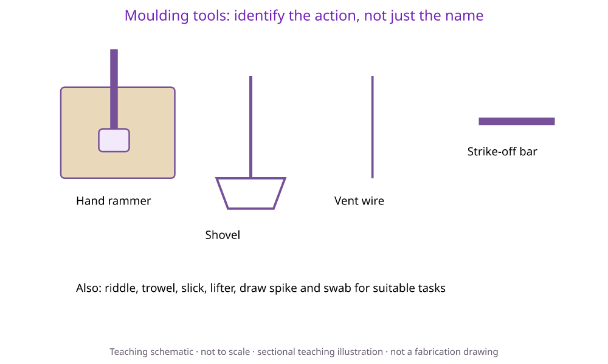
Q2(b)List the various pattern allowances and explain them with a neat sketch.4 marks
Model answer · 4 marks
Pattern allowances:
- Shrinkage/contraction: usually positive; enlarges pattern dimensions to compensate solid-metal contraction on cooling.
- Machining/finishing: extra stock on surfaces that will be machined off.
- Draft: taper on withdrawal faces to release the pattern without tearing sand.
- Distortion/camber: intentional counter-shape to offset predictable warping of an asymmetric casting.
- Rapping/shake: commonly negative; pattern loosening during withdrawal enlarges the mould cavity.
- Mould-wall movement: process-dependent correction for mould enlargement under heat/metal pressure.
Allowances are applied by surface and direction; they are not all positive additions. Core prints locate/support a core but are not a seventh dimensional allowance.
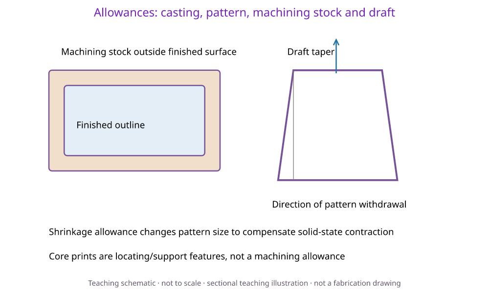
Q2(c)Select the appropriate casting method to produce a hollow pipe and explain it.7 marks
Model answer · 7 marks
Selected method: true centrifugal casting. It is suited to hollow cylindrical products such as pipes, sleeves and liners because rotation forms the bore without a sand core.
- A strong, balanced horizontal cylindrical mould is lined/coated and mounted on supports/drive rollers inside a guarded machine.
- The mould rotates at its specified controlled speed; qualified personnel introduce measured molten metal through the designed pouring arrangement.
- Centrifugal action holds the liquid against the mould wall. The mould defines the outside diameter while the free inner surface forms the hollow bore.
- Heat is extracted and metal solidifies from the outer wall inward; rotation is maintained for the required solidification stage.
- After controlled cooling and stopping, remove the casting safely, trim/machine ends and inspect bore, wall thickness and soundness.
Advantages include no core for the bore and good cylindrical integrity. The method needs specialised balanced equipment, is mainly for rotational shapes, and lighter inclusions may concentrate at the inner surface. Semi-centrifugal casting makes solid rotational parts; centrifuging fills off-axis cavities, so neither is the same pipe method.
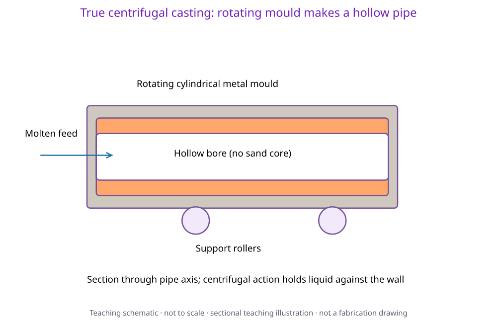
Q2(a) — ORExplain a gating system with a neat sketch.3 marks
Model answer · 3 marks
A gating system is the controlled passage that carries molten metal from the pouring basin into the mould cavity. The basin receives the stream; a tapered sprue conducts it downward; a sprue well reduces impact; the runner distributes flow; ingates connect the runner to the cavity. Runner extensions/filters may trap inclusions. Vents release mould gas. A riser is a feeder for solidification shrinkage, not a gate.
Design balances filling time, erosion, aspiration, turbulence and premature freezing; simply enlarging every passage is not a sound design rule.
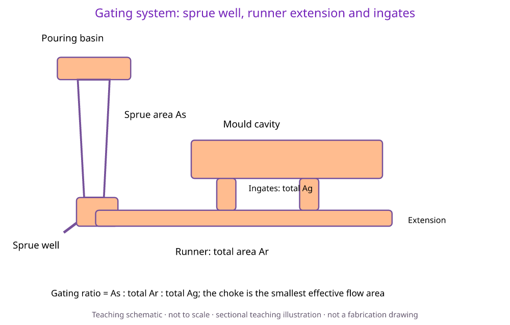
Q2(b) — ORList the various types of pattern. Explain any one of them.4 marks
Model answer · 4 marks
Types: single-piece, split/two-piece, multi-piece, loose-piece, match-plate, cope-and-drag, gated, sweep, skeleton, segmental and follow-board patterns.
Split pattern: the pattern is divided at a suitable parting plane into cope and drag halves. Locating pins/dowels align the halves during moulding. After each half has formed its portion of the cavity, the pattern is withdrawn without requiring a one-direction pull through the entire shape. It suits components whose geometry would make a single-piece pattern difficult to withdraw.
Pattern type is selected for shape, undercuts, parting line, withdrawal direction and production quantity; extra pieces improve access but add alignment/handling demands.

Q2(c) — ORFind the cost of a C.I. pulley of volume 1000 cm³ using the given rates; the pattern is provided by the customer.7 marks
Model answer · 7 marks
Assumptions: the stated volume is the net pulley casting; no extra gating, rejection or metal-loss allowance is given. The customer-provided pattern has no charge. Both percentages are applied to material cost, as stated.
Material cost = 7.2 kg × ₹25/kg = ₹180.00
| Cost item | Calculation | Cost |
|---|---|---|
| Cast iron | 7.2 × ₹25 | ₹180.00 |
| Overhead | 10% × ₹180 | ₹18.00 |
| Moulding charge | 15% × ₹180 | ₹27.00 |
| Moulder labour | ₹150/day ÷ 30 moulds/day | ₹5.00 |
| Customer pattern | Provided | ₹0.00 |
Assumption / convention: The problem does not specify yield, scrap credit or additional finishing cost; none is included.
Question 3
Question wording, marks and expandable study solution
Q3(a)Differentiate between soldering and brazing process.3 marks
Model answer · 3 marks
| Feature | Soldering | Brazing |
|---|---|---|
| Filler-metal liquidus (conventional definition) | Below 450°C | Above 450°C but below the base-metal solidus |
| Base metal | Remains solid | Remains solid |
| Joint action | Molten filler wets the prepared surfaces; flux may remove/protect against oxide. | Molten filler wets and, in a close-clearance joint, can flow by capillary action; flux/controlled atmosphere may be used. |
| Typical duty | Electrical/electronic and light-duty joints; lower service strength/temperature. | Stronger/higher-temperature joints and suitable dissimilar-metal assemblies. |
The 450°C boundary is the conventional classification by filler liquidus, not a universal torch setting. Neither process intentionally melts the base metal.
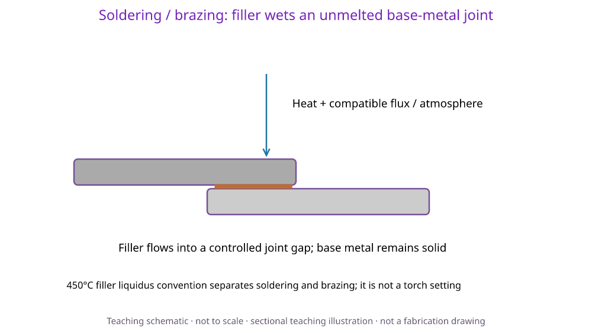
Q3(b)Discuss the importance of safety and various safety equipment in metal-joining processes.4 marks
Model answer · 4 marks
Joining can expose workers to arc UV/IR, hot metal, spatter, fumes, electric shock, fire, compressed gas and pinch/crush hazards. Controls prevent burns, eye injury, respiratory exposure and serious fires.
- Welding helmet with the correct filter, safety glasses and screens protect eyes/nearby workers from arc radiation and spatter.
- Flame-resistant clothing, welding gloves and safety footwear protect skin from heat and sparks.
- Local fume extraction/ventilation and a suitable respirator where the risk assessment requires it control fumes.
- Insulated, rated leads/holders, sound connections, safe isolation and a correctly connected work return reduce shock risk; the return is not protective earthing.
- For gas work: secure cylinders upright, use gas-specific regulators/hoses and specified non-return/flashback protection; keep oxygen equipment oil-free.
- Remove combustibles, use the hot-work permit/fire watch and suitable fire equipment; never weld sealed/unknown containers.
Only trained personnel should set or operate equipment; follow the site procedure, extraction and guarding requirements.
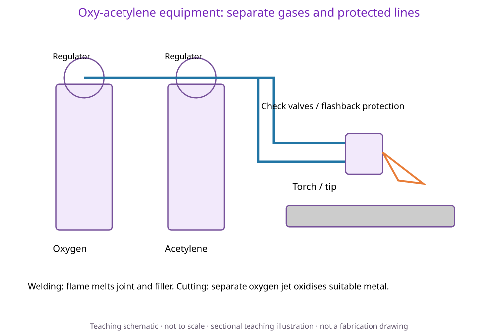
Q3(c)Select the appropriate welding process to join a rail track and explain it.7 marks
Model answer · 7 marks
Selected process: thermit (aluminothermic) rail welding. It is suitable for field rail joints where a moulded metal bridge is required and a conventional arc source is not the chosen route.
- Qualified personnel align the rail ends to the approved gap/profile and secure them with suitable fixtures.
- A dry refractory mould is fitted around the joint and sealed/checked; the qualified process may require controlled preheating.
- An approved proprietary thermit system generates superheated molten steel through an exothermic reduction reaction (commonly represented by Fe₂O₃ + 2Al → 2Fe + Al₂O₃ + heat). No charge ratio or ignition procedure is assumed here.
- The molten metal flows into the moulded rail gap while slag is separated by the designed delivery arrangement.
- After the specified solidification/cooling stage, trained staff remove the mould, trim/grind the excess and finish the rail profile.
- Inspect alignment, surface profile and specified internal/acceptance criteria before the track is returned to service.
It produces a continuous field joint without a separate external arc source, but is a one-shot, extremely high-temperature specialist operation requiring a qualified procedure and exclusion controls.
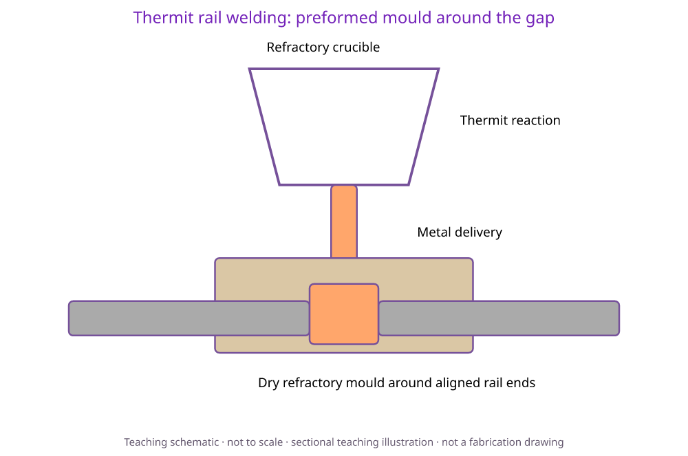
Q3(a) — ORDifferentiate between TIG and MIG welding process.3 marks
Model answer · 3 marks
| Feature | TIG / GTAW | MIG / GMAW |
|---|---|---|
| Electrode | Non-consumable tungsten; separate filler is optional. | Continuously fed consumable wire supplies filler. |
| Shielding | Inert gas, commonly argon/helium, protects the pool and tungsten. | Shielding gas protects the wire arc/pool; strictly, MIG uses inert gas, while active-gas variants are MAG. |
| Deposition / control | Precise pool control and clean finish; generally slower deposition and higher operator skill. | Higher deposition rate and easier mechanisation; feed/gas settings and drafts affect quality. |
| Typical use | Thin sections, stainless steel, aluminium and quality-critical work. | Production fabrication, sheet/sections and longer welds. |
Both are arc-fusion processes; correct alloy, filler, shielding and qualified procedure remain essential.
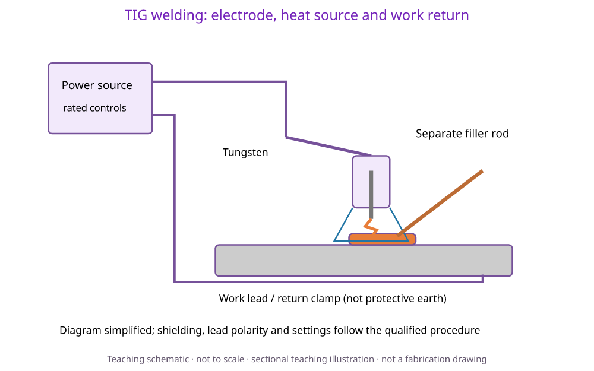
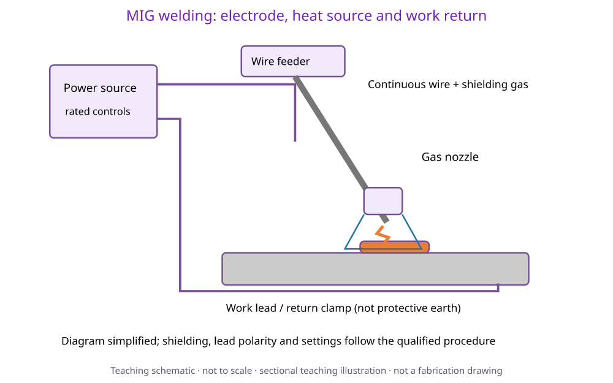
Q3(b) — ORSketch the types of oxy-acetylene flames, showing clearly the different zones.4 marks
Model answer · 4 marks
Neutral flame: approximately balanced oxygen/acetylene; it has a distinct inner cone and surrounding outer envelope, with no acetylene feather. It is used for many general welding applications.
Carburising (reducing) flame: excess acetylene; it shows an inner cone, a visible acetylene feather, and the outer envelope. Use only when compatible with the alloy/procedure because carbon pickup can change metal chemistry.
Oxidising flame: excess oxygen; it has a shorter, sharper inner cone and outer envelope. It can oxidise many metals and is selected only for suitable materials/processes.
The relative zone lengths in the sketch are schematic. Flame choice is by work material and qualified procedure, not by colour alone.

Q3(c) — OREstimate the total cost of oxy-acetylene welding for the given 0.5 m weld.7 marks
Model answer · 7 marks
Given: weld length = 0.5 m = 50 cm; speed = 2 m/h. Assume one 0.5 m weld, no extra setup/overhead, and consumption rates apply per metre of weld as printed.
Oxygen = 0.7 m³/m × 0.5 m = 0.35 m³; cost = 0.35 × ₹25 = ₹8.75
Acetylene = 0.8 m³/m × 0.5 m = 0.40 m³; cost = 0.40 × ₹50 = ₹20.00
Labour = 0.25 h × ₹40/h = ₹10.00
The printed filler rate is 0.5 m per cm of weld: 0.5 × 50 = 25 m of rod; at ₹10/m, filler cost = ₹250.00.
The filler rate is unusually large. If the intended unit was 0.5 m of rod per metre of weld, filler would be 0.25 m costing ₹2.50 and the total would instead be ₹41.25. The stated unit should be confirmed; no silent correction is made.
Assumption / convention: The main total uses the question's literal 0.5 m/cm filler consumption; the likely alternative unit is shown separately.
Question 4
Question wording, marks and expandable study solution
Q4(a)What is cold working process? State its advantages.3 marks
Model answer · 3 marks
Cold working is plastic deformation carried out below the metal's recrystallisation range (often near ambient temperature). It changes shape without melting or chip removal and raises dislocation density through strain hardening.
- Improved surface finish and closer dimensional accuracy because there is little high-temperature scale.
- Increased strength and hardness from work hardening.
- Good productivity and repeatability for suitable operations such as cold rolling, drawing and forming.
- Material is not heated to forging/rolling temperature, though the forming force is higher and ductility can decrease.
Intermediate annealing may be needed after substantial reduction.
Q4(b)Explain the wire-drawing process with a neat sketch.4 marks
Model answer · 4 marks
Wire drawing reduces a rod/wire cross-section by pulling it in tension through a converging die; it is not extrusion, which pushes metal through a die.
- Clean and prepare drawable stock; lubricate it using the specified method.
- Point/thread the starting end through the die under safe setup conditions and grip it in a drawbench/capstan.
- Pull the stock through the die. The die land sets the smaller section; length increases as cross-sectional area decreases.
- Use further planned passes and intermediate annealing if required by material strain; inspect size, surface and straightness.
The die has an entry/bell, reduction zone, bearing and exit. Drawing gives good finish/tolerance but is limited by tensile force, ductility, die wear and cracking risk.
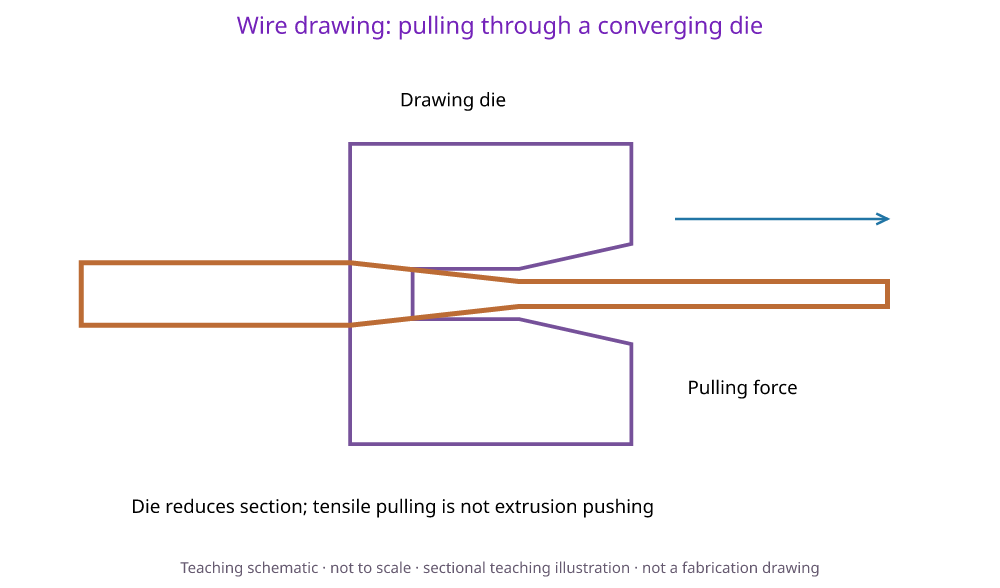
Q4(c)Select the appropriate forging method to manufacture a connecting rod and explain it.7 marks
Model answer · 7 marks
Selected method: impression-die (closed-die) hot forging, usually in a press or drop-forging sequence. It is suited to repeated connecting-rod production because the die impressions form the web, big end and small end with controlled grain flow and good strength.
- Cut a billet of suitable alloy and calculate stock including specified scale/flash allowances.
- Heat/condition the billet to the approved forging range and place it in a blocker/preform impression.
- Apply controlled blows/press force to distribute metal toward the rod ends and web without folds or underfill.
- Transfer to the finishing impression; matched dies shape the rod outline and excess metal forms designed flash.
- Remove and trim flash using the planned tool; cool and heat-treat only as specified.
- Inspect fill, alignment, cracks and grain-flow-sensitive regions; machine the big- and small-end bores and other finished surfaces.
Repeatability and favourable worked structure are advantages; dies, trimming, high loads and stock-volume control add cost. Exact die stages depend on rod design and production route.

Q4(a) — ORClassify the methods of metal-forging process.3 marks
Model answer · 3 marks
Forging methods can be classified on more than one basis:
- By die/tooling: open-die (smith), impression/closed-die, precision/flashless.
- By loading/operation: hammer/drop forging, press forging, upset/heading forging and roll forging.
- By temperature: hot, warm or cold forging, relative to material and process requirements.
These categories overlap: a closed-die forging can be made by hammer or press, and hot/cold describes temperature rather than die shape.
Q4(b) — ORList the sequence of operations for manufacturing a hexagonal bolt by smith forging.4 marks
Model answer · 4 marks
- Cut round bar stock to the required blank length, including head allowance and finishing/thread allowance.
- Heat the head end uniformly to the approved forging condition; hold with suitable tongs.
- Upset the end to gather enough metal for the head; avoid folds and excessive scale.
- Use hammer blows and a suitable heading tool/swage block to form and size the hexagonal head, rotating the stock to form all flats.
- Draw/size the shank to the specified diameter and length; form the chamfer/point as required.
- Dress/trim, cool by the approved route, clean and inspect dimensions and cracks.
- Cut/roll the thread after forging as specified; threading is a later finishing operation, not a forged feature unless the drawing says otherwise.
Q4(c) — ORFind the length of 2 cm diameter rod required for 500 bolts, allowing 15% total wastage. Square head: 2.5 cm side × 1 cm thick; shank: 2 cm diameter × 3 cm long.7 marks
Model answer · 7 marks
Assumption: “15% total wastage” means 15% of the starting stock is lost, so the useful-metal yield is 85%. The shank and head are approximated as a cylinder and square prism; extra thread/finishing stock is not specified.
Shank volume = π(1 cm)²(3 cm) = 3π = 9.4248 cm³
Square-head volume = 2.5 × 2.5 × 1 = 6.25 cm³
Net volume/bolt = 3π + 6.25 = 15.6748 cm³
Net volume for 500 = 500(3π + 6.25) = 7837.389 cm³
Rod length = volume/area = 9220.458/π = 2934.96 cm ≈ 29.35 m
If 15% is instead interpreted as a simple addition to finished-part volume, length = 1.15 × 7837.389/π = 28.69 m. State the convention used.
Assumption / convention: Wastage is ambiguous without a percentage base; the primary result adds 15% of finished volume, with 85%-yield alternative stated.
Question 5
Question wording, marks and expandable study solution
Q5(a)List the properties of plastic materials.3 marks
Model answer · 3 marks
- Low density/light weight and easy mouldability into complex shapes.
- Generally good corrosion and chemical resistance; properties vary by resin/grade.
- Usually good electrical insulation and low thermal conductivity.
- Many plastics have lower stiffness/strength and lower service temperature than metals; engineering grades are exceptions.
- Viscoelastic behaviour, creep and relatively high thermal expansion can affect dimensions under load/heat.
- Thermoplastics can often be remelt-processed; thermosets cure and do not simply remelt. Additives/reinforcement change properties.
No single property applies identically to every plastic.
Q5(b)Select a suitable method to manufacture disposable PET water bottles and explain it.4 marks
Model answer · 4 marks
Selected method: injection stretch blow moulding (ISBM), usually a two-stage route for PET bottles.
- Injection mould a thick-walled PET preform with the finished neck/thread; the preform is not yet the bottle.
- Condition/reheat the preform to the specified stretch-blow window and locate it in a bottle mould.
- A stretch rod elongates it axially while high-pressure air expands it radially against the cooled cavity (biaxial stretching).
- Hold/cool, open the mould and eject the bottle; inspect neck, wall distribution, clarity, dimensions and leakage.
Stretching improves strength/barrier performance for lightweight bottles. PET preform injection plus stretch-blow is distinct from ordinary extrusion blow moulding used for many other hollow containers.
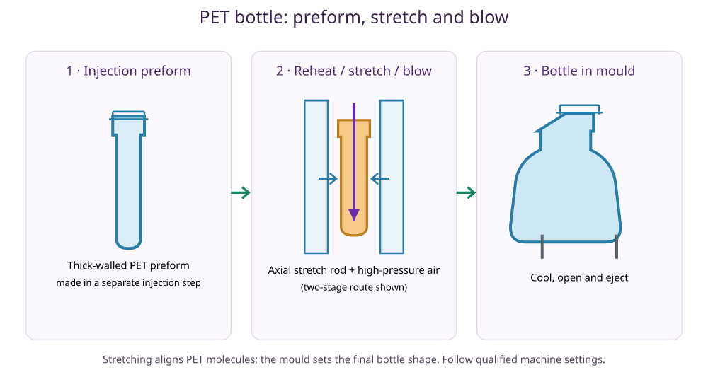
Q5(c)Explain the working principle of arc welding with a neat sketch.7 marks
Model answer · 7 marks
Representative process: shielded metal arc welding (SMAW). Arc welding establishes an electric arc between an electrode and the work. The arc's heat melts the joint edges; in SMAW the flux-coated consumable electrode also melts to supply filler.
- A suitable AC/DC power source, insulated holder/electrode lead and work-return lead complete the welding circuit.
- The operator maintains the specified arc length and travel; the arc heats the electrode tip and base-metal edges to create a weld pool.
- Electrode metal transfers into the pool. Flux decomposes to provide shielding gas and forms slag that protects the solidifying bead.
- The arc moves along the prepared joint; the pool freezes behind it and joins the parts.
- After safe cooling, remove slag between passes when required and inspect bead/profile and specified acceptance criteria.
Arc length, current, electrode, material preparation and shielding must follow the qualified procedure. PPE, fume control, screens and electrical isolation are essential.

Q5(a) — ORList applications of HDPE, LDPE and PP based on their characteristics.3 marks
Model answer · 3 marks
| Plastic | Useful characteristics | Applications |
|---|---|---|
| HDPE | Tough, chemical-resistant, low moisture uptake and relatively stiff. | Blow-moulded bottles/containers, water/gas pipes, drums and household crates. |
| LDPE | Flexible, tough and good moisture barrier; lower stiffness than HDPE. | Packaging films, bags, liners, squeeze bottles and cable coverings. |
| PP | Low density, chemical resistance and good fatigue performance in suitable living-hinge designs. | Caps, containers, appliance/automotive parts, housewares and living-hinge lids. |
Grade, additives, temperature and product regulations govern final suitability.
Q5(b) — ORWhat is compression moulding? List the advantages of injection moulding over compression moulding.4 marks
Model answer · 4 marks
Compression moulding: a measured charge (often thermoset) is placed in a heated matched mould; the press closes and heat/pressure make the material flow and cure or solidify before ejection.
Injection moulding advantages for suitable products:
- Shorter, readily automated cycles and high output for repeat production.
- Better ability to form intricate details, ribs, bosses and small features with a well-designed mould.
- Consistent shot metering and good dimensional repeatability when material, mould and process are controlled.
- Less manual charge placement and generally less flash/trim waste in a well-designed process.
Injection requires more complex/high-cost equipment and moulds and is not universally superior; compression is often suitable for large or thermoset parts.
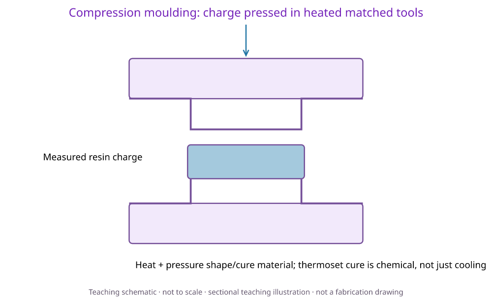
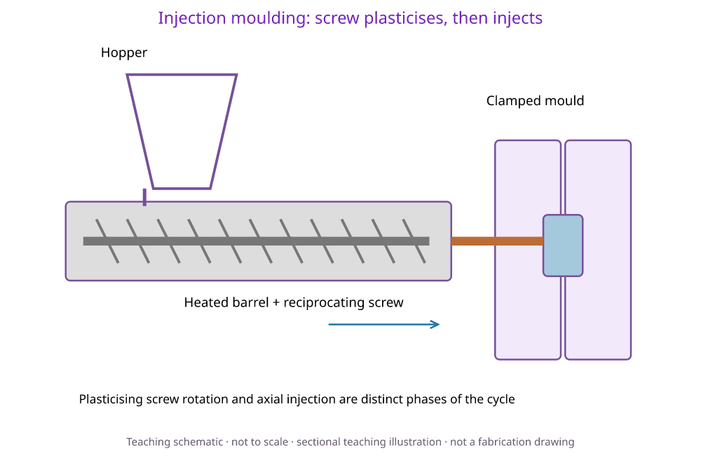
Q5(c) — ORState common casting defects and explain any four.7 marks
Model answer · 7 marks
Common defects: gas porosity/blowholes, shrinkage cavity, misrun, cold shut, sand/slag inclusion, mismatch, core shift, hot tear, metal penetration and warpage.
| Defect (four explained) | Typical cause | Prevention / remedy |
|---|---|---|
| Gas porosity / blowholes | Gas trapped/evolved due to moisture, low permeability, poor venting or melt condition. | Control sand/binder/moisture, venting and melt preparation; use calmer filling. |
| Shrinkage cavity | Liquid metal is not fed to a hot spot as the casting contracts. | Improve feeder connection/size and directional solidification; review section design and chills. |
| Misrun / cold shut | Metal freezes before filling or streams meet without fusing. | Review metal fluidity/temperature, section thickness, gating and filling time; avoid arbitrary overheating. |
| Sand/slag inclusion | Mould/core erosion or dirty melt carries particles into the casting. | Improve mould strength, melt cleanliness, filtration and controlled gating. |
| Mismatch / core shift | Cope/drag or core is displaced. | Check locating pins, core prints, support and clamping. |
| Hot tear | Contraction is restrained near the end of solidification. | Review alloy/geometry, mould/core collapsibility and feeding. |
Similar-looking defects need diagnosis; acceptance or repair follows the product specification.
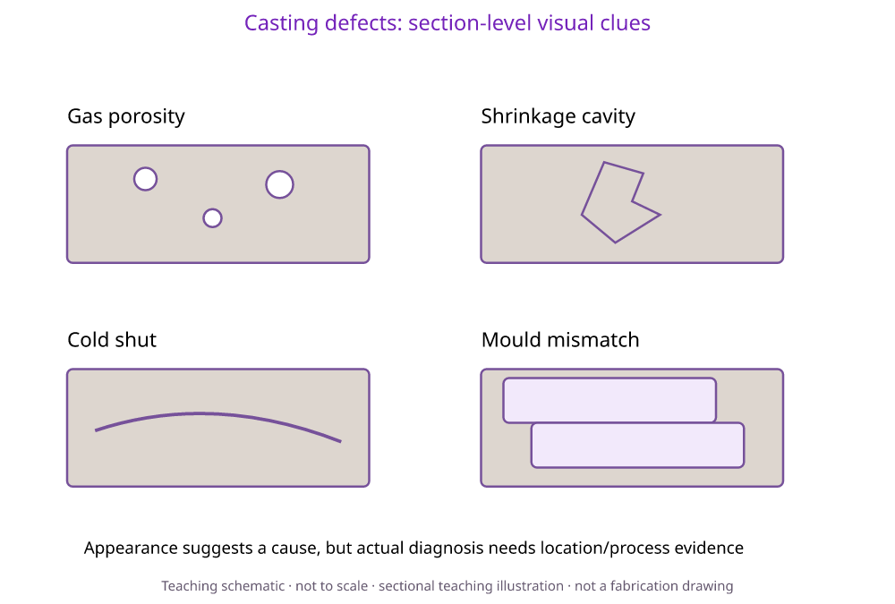